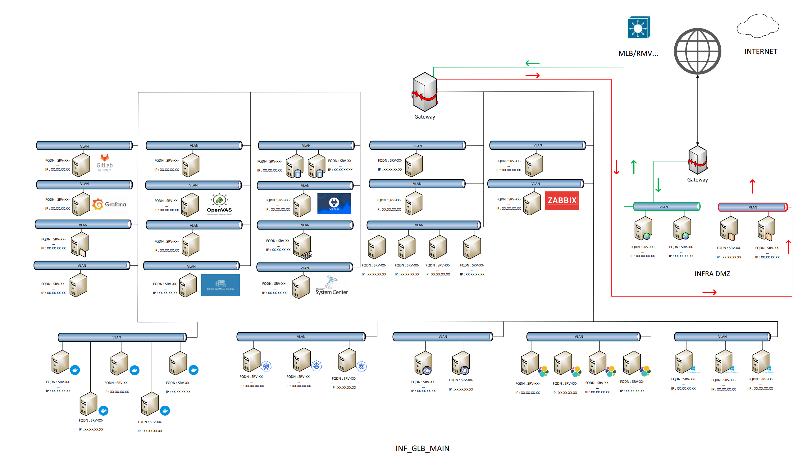

Schéma d’infrastructure
Contexte
Dans le cadre de mon alternance chez Cognacq-Jay Image, il m’a été demandé de réaliser des schémas d’infrastructure pour les différentes plateformes mises en production.
Cette mission répondait à un besoin de visibilité sur l’architecture réseau, les services utilisés et les liens entre les différents composants techniques.
Objectifs
- Cartographier les plateformes de production
- Obtenir une vision globale de l’architecture
- Identifier les services présents sur chaque plateforme
- Créer une méthodologie claire et réutilisable
- Maintenir les schémas à jour
Environnement technique
Travaux réalisés
Analyse du besoin
Identification du besoin principal : disposer d’une représentation visuelle claire et compréhensible de l’infrastructure de chaque plateforme.
Création des schémas
Réalisation de schémas d’infrastructure avec Microsoft Visio afin de représenter les serveurs, VLAN, passerelles, flux réseau et services déployés.
Méthodologie commune
Mise en place d’une méthode de représentation transposable à plusieurs plateformes afin de conserver une cohérence visuelle entre les différents schémas.
Mise à jour continue
Les schémas sont mis à jour régulièrement lors de l’ajout, la modification ou la suppression de services sur les plateformes concernées.
Exemple de schéma
Le schéma ci-dessous représente une architecture anonymisée pour des raisons de sécurité. Il permet de visualiser les VLAN, les passerelles, les flux réseau, les services applicatifs et la zone DMZ.

Exemple de cartographie d’infrastructure réalisée avec Microsoft Visio.
Résultats obtenus
Impact pour l’entreprise
- Meilleure visibilité sur l’architecture réseau
- Compréhension rapide des services par plateforme
- Support facilité lors des interventions
- Documentation visuelle réutilisable
- Suivi plus clair des évolutions techniques
Améliorations apportées
La cartographie permet de suivre plus facilement les changements effectués sur les plateformes, notamment lors de l’ajout ou du retrait de services.
Compétences mobilisées
- Gestion des demandes
- Administration système et réseau
- Cartographie d’infrastructure
- Documentation technique
- Analyse d’architecture réseau
- Utilisation de Microsoft Visio
Bilan personnel
Cette mission m’a permis d’apprendre à utiliser Microsoft Visio et de développer une meilleure vision globale de l’architecture réseau et des services utilisés en production.
La principale difficulté a été la prise en main de Visio. Pour y répondre, j’ai suivi des tutoriels afin de gagner en autonomie et de produire des schémas clairs et exploitables.